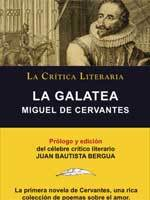
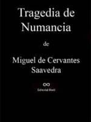
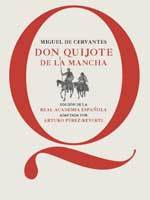
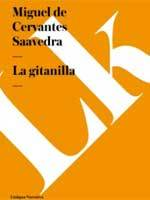
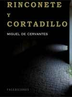
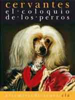
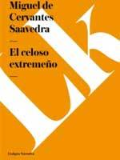
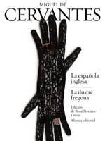
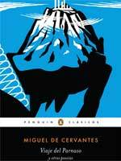
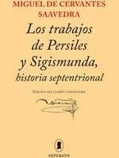

NOMBRE:DANLYZ DANIELA CAZ AVENDAÑO
GRADO:3RO BASICO
SECCION:A
AUTOR DEL SIGLO DE ORO
MIGUEL DE CERVANTES
BIOGRAFIA
Vida
Infancia y juventud
Torre de la iglesia de Santa María la Mayor de Alcalá de Henares, donde bautizaron a Miguel de Cervantes.
Resultó destruida en un incendio durante la Guerra Civil Española.
Desde el siglo XVIII está admitido que el lugar de nacimiento de Miguel de Cervantes fue Alcalá de
Henares,5 dado que allí fue bautizado, según su acta bautismal, y que de allí aclaró ser natural en
la llamada Información de Argel (1580).8 El día exacto de su nacimiento es menos seguro, aunque
lo normal es que naciera el 29 de septiembre, fecha en que se celebra la fiesta del arcángel San
Miguel, dada la tradición de recibir el nombre del santoral del día del nacimiento. Miguel de
Cervantes fue bautizado el 9 de octubre de 1547 en la parroquia de Santa María la Mayor.910 El acta
del bautizo reza:
Domingo, nueve días del mes de octubre, año del Señor de mill e quinientos e quarenta e siete años, fue
baptizado Miguel, hijo de Rodrigo Cervantes e su mujer doña Leonor. Baptizóle el reverendo señor
Bartolomé Serrano, cura de Nuestra Señora. Testigos, Baltasar Vázquez, Sacristán, e yo, que le
bapticé e firme de mi nombre. Bachiller Serrano.11
Sus abuelos paternos fueron el licenciado en leyes Juan de Cervantes y doña Leonor de Torreblanca, hija de
Juan Luis de Torreblanca, un médico cordobés; su padre se llamaba Rodrigo de Cervantes (1509-1585) y
nació en Alcalá de Henares por casualidad: su padre tenía entonces su trabajo allí. Lo educaron para
ser cirujano, oficio más parecido al antiguo título de practicante que a nuestra idea de médico. Don
Rodrigo no pudo seguir estudios continuados no solo por su sordera, sino por el carácter inquieto e
itinerante de su familia, que llegó a moverse entre Córdoba, Sevilla, Toledo, Cuenca, Alcalá de
Henares, Guadalajara y Valladolid, que se sepa; sin embargo aprendió cirugía de su abuelo materno
cordobés y del padrastro, también médico, que lo sucedió, sin llegar a contar nunca con un título
oficial.
Según Américo Castro, Daniel Eisenberg y otros cervantistas, Cervantes poseía ascendencia conversa por
ambas líneas familiares, siendo su padre cirujano ("practicante"), su abuelo abogado y su bisabuelo
trapero; por el contrario, su último biógrafo, Jean Canavaggio, afirma que no está probado y lo
compara con los documentos que apoyan esta ascendencia sin lugar a dudas para Mateo Alemán; en todo
caso, la familia Cervantes estaba muy bien considerada en Córdoba y ostentaba allí y en sus cercanías
cargos importantes.
El padre del escritor, Rodrigo, casó con Leonor de Cortinas, de la cual apenas se sabe nada, excepto que
era natural de Arganda del Rey.12 Los hermanos de Cervantes fueron Andrés (1543), Andrea (1544),
Luisa (1546), que llegó a ser priora de un convento carmelita; Rodrigo (1550), también soldado, que
le acompañó en el cautiverio argelino; Magdalena (1554) y Juan, solo conocido porque su padre lo
menciona en el testamento. Hacia 1551, Rodrigo de Cervantes se trasladó con su familia a Valladolid.
Por deudas, estuvo preso varios meses y sus bienes fueron embargados. En 1556 se dirigió a Córdoba
para recoger la herencia de Juan de Cervantes, abuelo del escritor, y huir de los acreedores.
No existen datos precisos sobre los primeros estudios de Miguel de Cervantes, que, sin duda, no llegaron a
ser universitarios. Parece ser que pudo haber estudiado en Valladolid, Córdoba o Sevilla.13
Lápida conmemorativa de los estudios de Miguel de Cervantes en la calle de la Villa (Madrid).
En 1566 se estableció en Madrid. Asistió al Estudio de la Villa, regentado por el catedrático de gramática
y filoerasmista Juan López de Hoyos (que en 1569 publicó un libro sobre la enfermedad y muerte de la
reina Isabel de Valois, tercera esposa de Felipe II). López de Hoyos incluye en ese libro dos poesías
de Cervantes, a quien llama «nuestro caro y amado discípulo», consideradas por algunos cervantistas
sus primeras manifestaciones literarias. En esos años juveniles se documenta su afición al teatro
asistiendo a las representaciones de Lope de Rueda, como afirma en el prólogo que puso a sus Ocho
comedias y ocho entremeses (1615):
Me acordaba de haber visto representar al gran Lope de Rueda, varón insigne en la representación y en el
entendimiento [...] Y, aunque por ser muchacho yo entonces, no podía hacer juicio firme de la bondad
de sus versos, por algunos que me quedaron en la memoria, vistos agora en la edad madura que tengo,
hallo ser verdad lo que he dicho; y si no fuera por no salir del propósito de prólogo, pusiera aquí
algunos que acreditaran esta verdad. En el tiempo deste célebre español, todos los aparatos de un
autor de comedias se encerraban en un costal, y se cifraban en cuatro pellicos blancos
guarnecidos de guadamecí dorado, y en cuatro barbas y cabelleras y cuatro cayados, poco más o menos.
Las comedias eran unos coloquios, como églogas, entre dos o tres pastores y alguna pastora;
aderezábanlas y dilatábanlas con dos o tres entremeses, ya de negra, ya de rufián, ya de bobo y ya de
vizcaíno: que todas estas cuatro figuras y otras muchas hacía el tal Lope con la mayor excelencia y
propiedad que pudiera imaginarse. No había en aquel tiempo tramoyas, ni desafíos de moros y
cristianos, a pie ni a caballo; no había figura que saliese o pareciese salir del centro de la tierra
por lo hueco del teatro, al cual componían cuatro bancos en cuadro y cuatro o seis tablas
encima, con que se levantaba del suelo cuatro palmos; ni menos bajaban del cielo nubes con ángeles o
con almas. El adorno del teatro era una manta vieja, tirada con dos cordeles de una parte a otra, que
hacía lo que llaman vestuario, detrás de la cual estaban los músicos, cantando sin guitarra algún
romance antiguo
Y, según declara en la segunda parte del Quijote por boca de su personaje principal, en su juventud «se le
iban los ojos tras la farándula» (Don Quijote, II, 12).
LIBROS
'La Galatea'
Publicada en 1585, se ubica dentro de lo que se conoce la novela pastoril por incluir entre sus
protagonistas a pastores. La trama se sitúa en algún lugar cercano al Tajo y contiene muchas de las
ideas que Cervantes tenía sobre el amor. Los dos personajes principales son Elicio y Erastro, dos
pastores enamorados de Galatea, una joven que encarna las virtudes tradicionales de los personajes
femeninos del autor: honestidad e idealismo. Los dos hombres se pelean por el amor de Galatea, que se
resiste y hará sufrir a los dos hombres.

'La gitanilla'
Es, sin duda, la gran obra teatral de Miguel de Cervantes, un género en el que el autor hizo bastantes
menos incursiones que en la novela. Conocida también como ´Numancia´, se calcula que fue
escrita hacia 1585 y está basada en las guerras celtíberas del siglo II antes de Cristo. Un relato
que adopta la forma de la tragedia clásica, con los habitantes de Numancia ofreciendo su propio
sacrificio antes de caer bajo el dominio del Imperio. Uno de los mejores ejemplos del teatro español
del siglo XVI.

'El ingenioso hidalgo Don Quijote de La Mancha'
La obra más famosa de la literatura en castellano, la cumbre de las letras españolas, apareció, en su
primera parte, en el año 1605. Una sátira sobre las novelas de caballerizas rebasó su objetivo
inicial y pasó a convertirse en una reflexión intemporal y universal sobre el comportamiento del
hombre. Considerada por muchos críticos y lectores como como la mejor obra literaria de ficción de todos
los tiempos, su segunda parte se publicó diez años después. Su legado e influencia fueron, y son
todavía, enormes. Dos personajes, el caballero Don Quijote y su escudero Sancho Panza, recorren La
Mancha viviendo hilarantes aventuras.

'La Gitanilla'
Es la más extensa de las denominadas ´Novelas ejemplares´, una serie de novelas cortas que Cervantes
escribió entre los años 1590 y 1612, pero que aparecerían publicadas en el año 1613. ´La Gitanilla´
aborda la historia de una niña procedente de la nobleza, raptada y educada por gitanos. Un noble
enamorado de ella decide ir abandonando su condición aristocrática para seguir el camino de la joven y lograr su amor.

'Rinconete y Cortadillo'
Incluida también dentro de las ´Novelas ejemplares´. Gran incursión de Cervantes en el género de la
picaresca, un terreno transitado medio siglo antes por ´Lazarillo de Tormes´, otra de las novelas más
populares de la España de la época. Dos jóvenes, de nombre Rinconete y Cortadillo, abandonan sus
hogares y se entregan a una vida incierta junto a un grupo de malhechores. Cervantes juega aquí con
el tema de la redención personal, presente en muchas de sus obras.

'El coloquio de los perros'
Cervantes se adentra de nuevo en el campo de la alegoría más idealística, con una fantasía que tiene como
protagonistas a dos perros, Cipión y Berganza, que adquieren la capacidad de hablar durante las
noches. Uno de ellos, Berganza, narra sus aventuras con una clara influencia del estilo de la
picaresca. Un militar herido asiste a la conversación entre los dos perros, extrayendo sus propias
conclusiones sobre la vida. También forma parte de las ´Novelas ejemplares´.

'El celoso extremeño'
Uno de las vertientes más difíciles del amor, los celos, definen la temática de ´El celoso extremeño´,
también incluida en las ´Novelas ejemplares´. Cervantes describe los terribles celos que dominan a un
indiano que decide encerrar a su mujer para evitar que tome contacto con todo hombre. Sin embargo, al
asignarle un esclavo negro como vigilante de su esposa, el indiano siembra su camino hacia su propia
humillación.

'La ilustre fregona'
En esta obra, que también forma parte de las ´Novelas ejemplares´, dos jóvenes de buena familia, Carrizo y
Avendaño, se lanzan a recorrer la vida de la picaresca, un guiño a ´Rinconete y Cortadillo´. Durante
su viaje, uno de ellos, Avendaño, conoce a Constanza, una sirvienta de la que se enamora y cuyo
linaje esconde una sorpresa que se conoce al final. Es lo que en literatura se conoce como agnición,
una revelación final que condiciona todo el desenlace.

'Viaje del Parnaso'
Obra del año 1614, ´Viaje del Parnaso´ es una de las pocas aventuras de Cervantes en el campo de la
poesía, de nuevo con múltiples referencias al clasicismo griego. El propio autor es el protagonista,
junto a poetas españoles, que deciden librar una batalla contra los poetas mediocres que castigan a
la lírica. Una obra con alusiones autobiográficas a la vida de Cervantes y una defensa de la buena
literatura.

'Los trabajos de Persiles y Sigismunda'
La última obra de Cervantes es un ejemplo del subgénero de la novela bizantina, un antecesor de las
novelas de aventuras y que de nuevo ejemplifica la pasión de Cervantes por la prosa de la Grecia
clásica. Sin embargo, Cervantes se aleja aquí del rasgo realista de otras novelas y conduce una trama
cuyo argumento contiene elementos que, siglos después, podrían reunir concomitancias con el realismo
mágico del ´boom´ latinoamericano.
